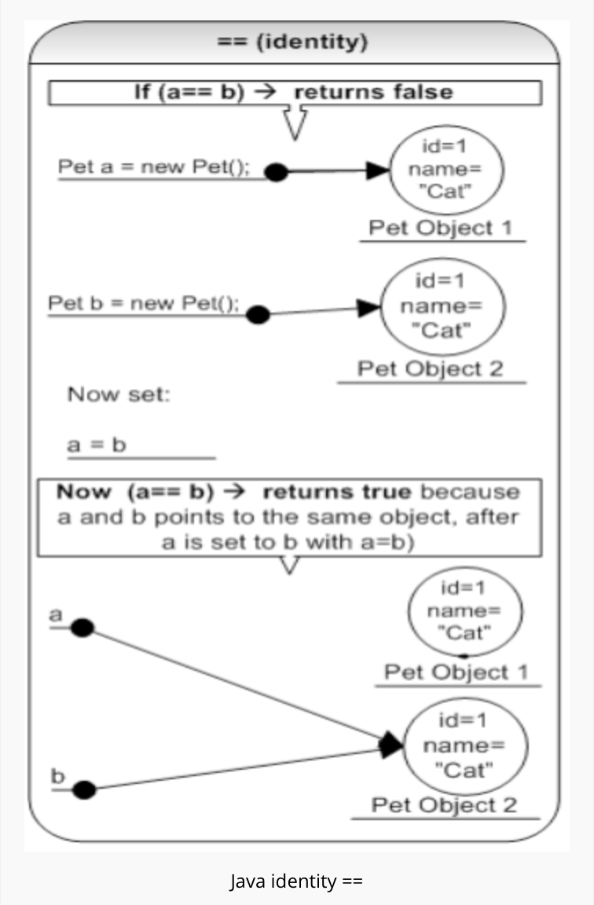
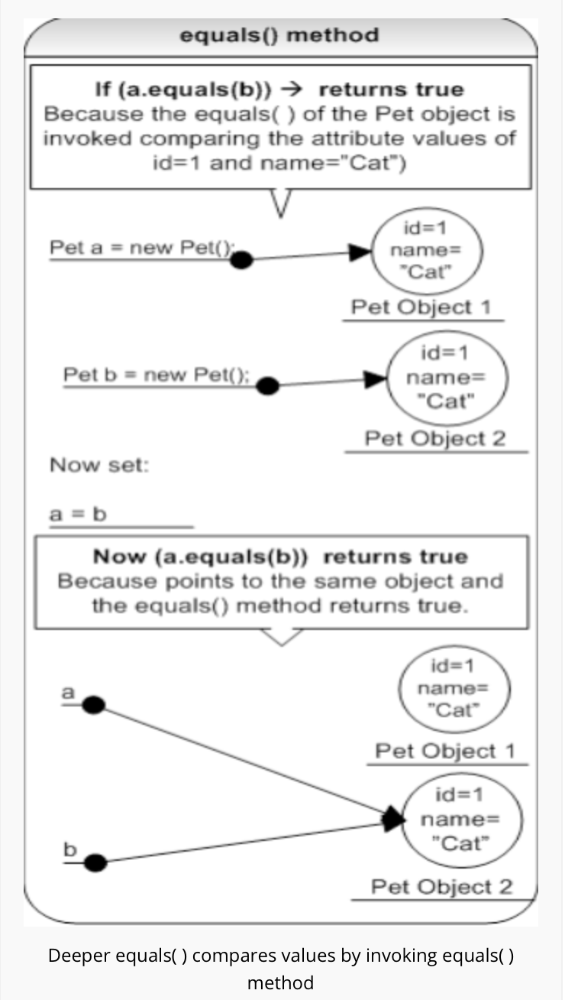

"==" is
"equals()" is


If the passed in argument was a
Modifying the copied parameter will
if the passed in argument was an
So, if you modify the object value through the copied reference, the original object
- If string is mutable, changing the string with one reference will lead to the wrong value for the other references.
Synchronization and concurrency : making String immutable automatically makes them thread safe thereby solving the synchronization issues.
String is immutable in Java, and this immutability gives the benefits like security and performance discussed above.StringBuffer is mutable, hence you can add strings to it, and when required, convert to an immutable String with the toString( ) method.StringBuilder is very similar to a StringBuffer, but StringBuffer has one disadvantage in terms of performance as all of its public methods are synchronized for thread-safety. StringBuilder in Java is a copy of StringBuffer but without synchronization to be used in local variables which are inherently thread-safe. So, if thread-safety is required, use StringBuffer, otherwise use StringBuilder.